Project 2: Local Feature Matching
Images can be matched by identifying their uniques features. Features in images often refer to specific locations in the image such as peaks, corners, edges etc. Thus we can match these features in two images to identify them. These kinds of localized feature are often called keypoint features or interest points. Local features matching of an image involves three major steps.
|
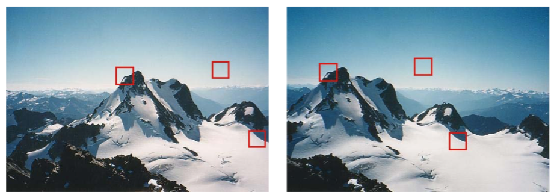
Figure 1: Example of images two different images with potential matching features. |
To implement the above, we use algorithms like Harris Corner Detector, Scale-Invarient feature transform (SIFT), and nearest neighbour distance ratio. These are described in the following sections. In figure 1, we see an example of potential matching features (peaks and edges) in both the images, although the images are not the same.
Interest point detection
For detecting interest points, we have implemented two techniques viz.,
- 1. Harris Corner Detection.
- 2. Adaptive non-maximal suppression.
- 3. Keypoints at multiple scales.
Harris corner detection technique.
This leverages from the fact that the gradient of an image will give us edges its edges. Thus to ensure that both x and y axis edges are detected, we take gradients in both the axes. We use auto-correlation function given below to ensure that the features detected are stable.
The determinant of this auto-correlation matrix gives us a lower bound on the uncertainty in the location of a matching feature. Thus the cornerness function is given as
Thus, we first slightly blur the image using a narrow gaussian. This is done to ensure good edge detection on smoothing. Then we take the x direction and y direction gradients of the image, filter them with another gaussian filter, and then construct the auto-correlation matrix. We use a constant adjustment factor 'alpha' to account for offsets. This cornerness functions is higher for more confident corners/edges. For comupting the gradient of the image, use use sobel filtering. Due to the structure of sobel filter, we effectively get a fast approximating of gradient.

Figure 2: Original Image
|
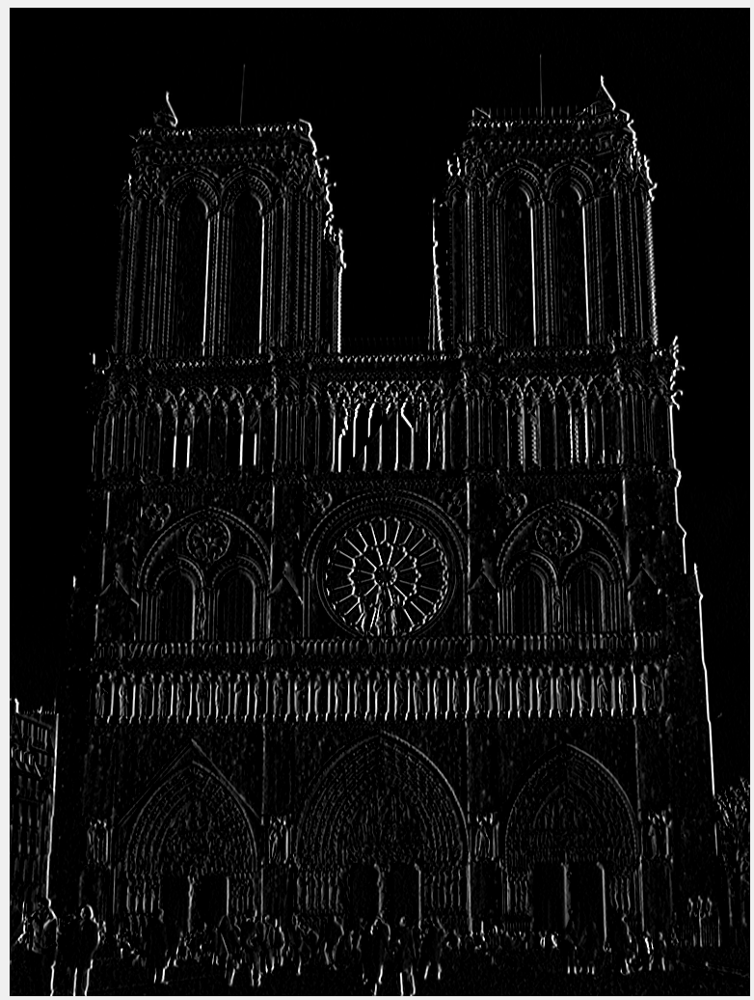
Figure 3(a): Gradient of image in x direction. |
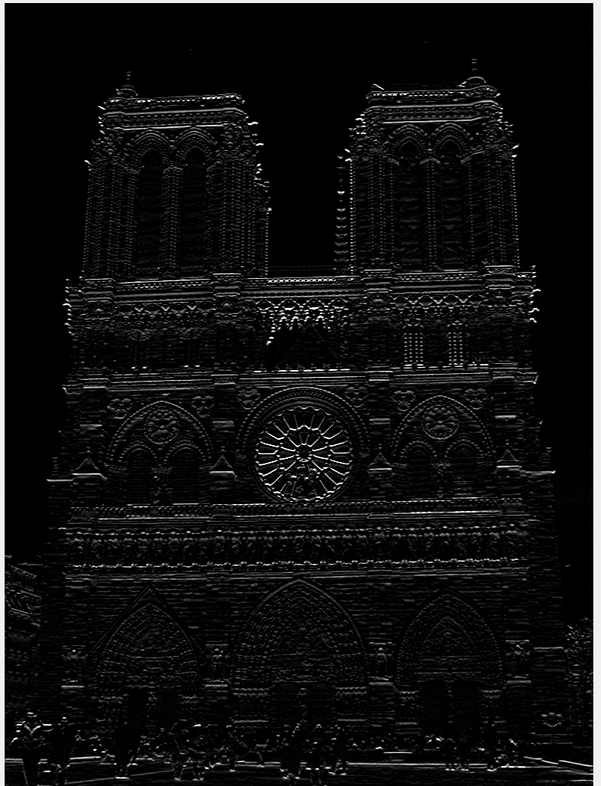
Figure 3(b): Gradient of image in y direction. |
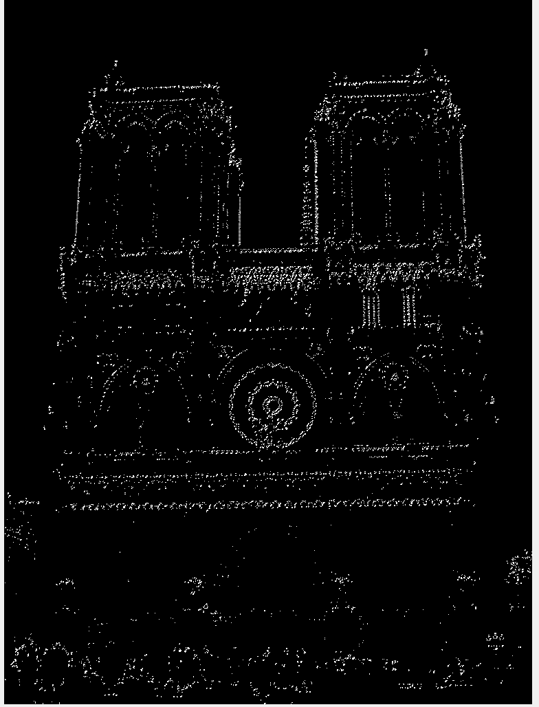
Figure 3(c): Interest points of image. |
In detection of interest points, we can select only those points that have above a certain threshold of cornerness score. With this we get about 81% accuracy with the image of Notre Damne as shown in figure 4. We may also select those points that are also the maxima in their neighbourhood. This is known as non-max suppression. As the name suggests, we are suppressing the non local maxima points. In this process, we have to tune two free parameters viz., the threshold for cornerness score, and the number of pixels to consider as those surrounding the interest points for non-max suppression. The advantage of using non-max suppression is that we don't have too many interest points in close proximity, thus avoiding the possibility of false matches.
|
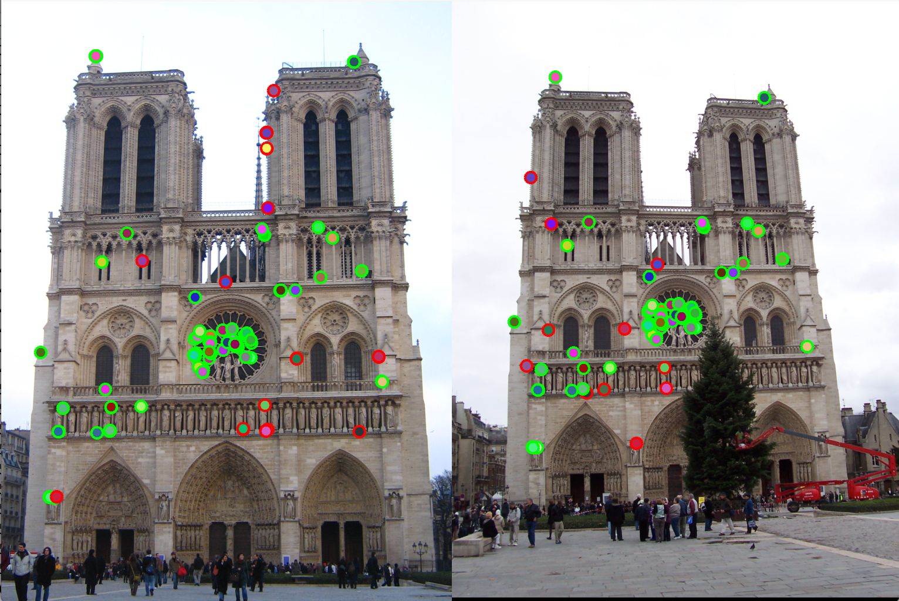
Figure 4(a): Detection of interest points using Harris corner detection |
|
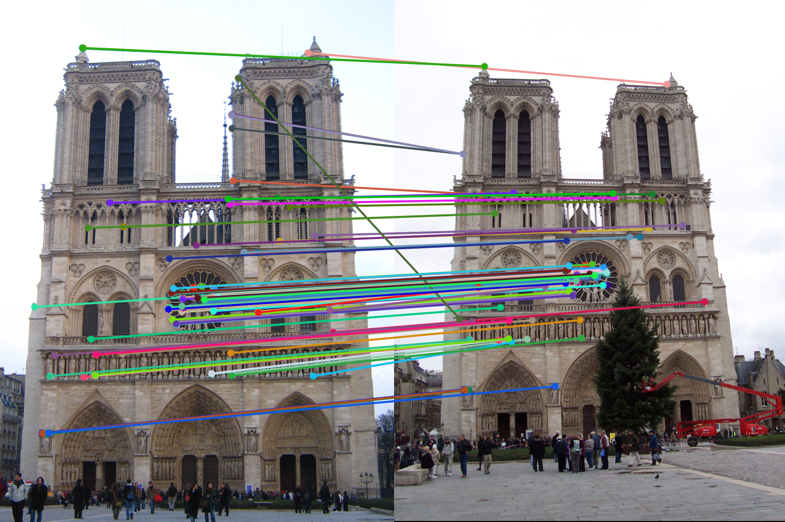
Figure 4(b): Matching interest points (Accuracy 80%). |
Adaptive Non-Maximal Suppression (ANMS): In detection of interest points, our second method of implementation is adaptive non-maximal suppression. The purpose here is to ensure that the non-max suppression region is adaptive. Thus we implement it to consider only those interest points are have as high cornerness value, and are as far away from each other as possible. The free parameter here is the number of interest points we want as our result. The algorithm followed here is as follows. Here we first find those pixels that have a cornerness score that is a local maximum in 3x3 pixel region. Once we have these points, we select the points that are greater than the average of cornerness scores of all pixels in the image. This is done to limit the number of computations. Once we have these points, we find the radius around each pixel where it has the greatest cornerness score i.e., the radius taken is the distance till the nearest interest point of greater cornernesss score. This is shown in the Figure 5. Here, the pixel under consideration is tables A. R = cornerness score. Higher the cornerness score, more likely it is to be a good edge. With ANMS we see that the nearest pixel with R greater than itself is pixel C. Thus, all pixels in the circus shown will be suppressed, thus pixel B,G,E,F will not be considered as interest points. We observe that with ANMS, we get 100% accuracy with Notre Dame image, which is much higher than with our result simple thresolding.
Figure 5: Calculation of adaptive radius.
|
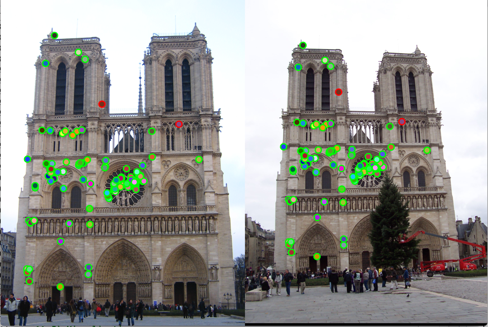
Figure 6(a): Detection of interest points using ANMS |
|
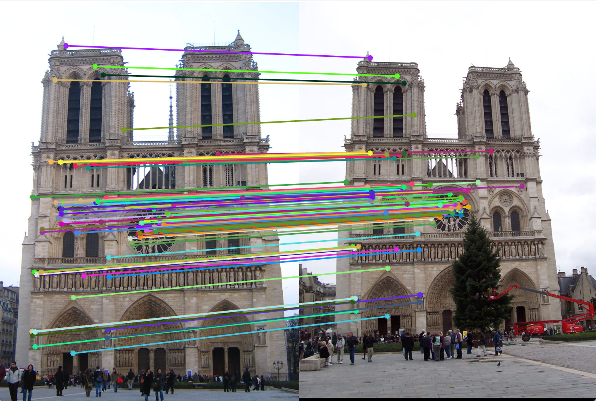
Figure 6(b): Matching interest points (Accuracy 100%). |
Keypoints and feature description at multiple scales:
In detection of interest points, we also detect keypoints and their features at multiple scales. We resize the image to specific scales, detect keypoints at each of these scales, and consider all of them for feature descriptor and matching featues. Due to this, if either of the images is at a different scale, our matching algorithm will match those features from a more appropriate scaled image. Here, we have a wrapper function named get_interest_points_scaling. This returns the indices of interest points x, and y. It also returns an array named 'scales' which tell us what scale the corresponding index belongs to. The implementation of this method requires scaling the image during keypoint detection, and implenting Harris corner detection for all the scales. The scales at which the keypoints are detected are saved in a array returned from the function get_interest_points. get_features then uses these scales to rescale the image and find the features for corrosponding interest points at the scale it belongs to. We find interest points and features in scale 1x, 0.5x, and 0.25x to observe a 1% increase in accuracy as compare to single scale detection and feature description (Fig 12(a) and Fig 12(b)).
Local feature description
For local feature description, we have implemented two techniques viz.,
- Scale invarient feature transform (SIFT).
- SIFT with keypoints at multiple scales.
SIFT:
For Local feature description, we capture features around the interest point which will help us identify the the patch for matching. To do so, we use scale-invarient feture transform (SIFT). In SIFT, we find the gradient of an image patch surrounding the interest point detected earlier In our code we have used 16x16 patch. We then use matlab's histcounts function to bin these gradient directions. As gradient remains same irrespective of the scale of the image, this is named as scale-invarient technique. In our implementation we have created histogram bins for 4x4 pixels from the 16x16 image patch, and have binned them into 8 bins each representing 45 degrees. Thus we have one hisogram of 8 values for each of the 4x4 pixel bunch. Thus we have 4*4*8 = 128 values to describe each interest point. Hence our feature vector's length is 128.
To obtain the gradient, we use first cut out image patches around the interest points, then blurr it slightly using imfilter, and finally apply imgradient to get gradient magnitudes and direction. As this we use blockproc (an inbuilt matlab function) to compute the histogram count of the bins.
|
Figure 7(a): Interest points detection using SIFT. |
|
Figure 7(b): Matching interest points (Accuracy 100%). |
Feature Matching
For feature matching, we find implement two methods.
- 1. Exhaustive distance between all features
- 2. knnsearch using kdtree.
Exhaustive distance method:
In the first implementation, we compute euclidean distances between all the features. once we have all distance pairs, we sort them and pick the two features which are lowest distance away. This distance will tell us the matches in features. To pick out the best matches, we must pick those distances that are limited to a certain threshold. This threshold is a free parameter, and will be different for different interest points. Thus, instead, we compute the ratio between the two lowest distances, and threshold these ratios.
knnsearch using k-d tree:
A k-d tree (short for k-dimensional tree) is a space-partitioning data structure for organizing points in a k-dimensional space. k-d trees are a useful data structure for several applications, such as searches involving a multidimensional search key (e.g. range searches and nearest neighbor searches). With a given set of points, k-d tree builds a three dimention structure, and given a point, we can find the nearest neighbour by using k-d search. Here, the way binary search splits the sample space into two successively, k-d tree search partitions the region of space creating a binary search space in each partition level. An example of 2 dimension k-d tree partition is shown in figure 8. The algorithm we follow in this implementation is as follows. We use matlab's inbuilt knnsearch function and k-d tree searcher. Here we use the function to get two 2 nearest neighbours. Following this, we use the same technique as above where we threshold the ratio of nearest neighbour distance to second nearest neighbour distance. The advantage of using knnsearch is that it is faster as we are not storing and computing all the distances between all the interest points. In some cases, knnsearch may give more accurate neighbours in some cases, but it is always much faster in execution than exhaustive search.
Figure 8: Example of 2 dimentional k-d tree partition.

Figure 9(a): Interest point detection using Harris point detection. |
|
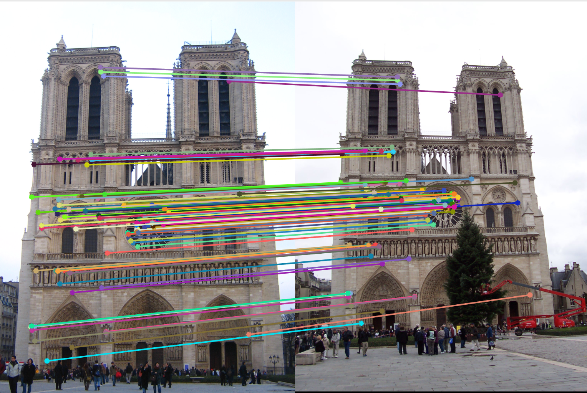
Figure 9(b): Matching interest points using knn search reduces execution time by almost 10x. |
Result:
Notre Dame
1. Harris corner detection, with non-max suppression:
Gaussian filter sigma = 0.5
gaussian filter size = 3
alpha = 1.54e-3
Size of non-max suppression window = 3x3 pixels window
Resulting accuracy = 98% (for top 100 matches)
|
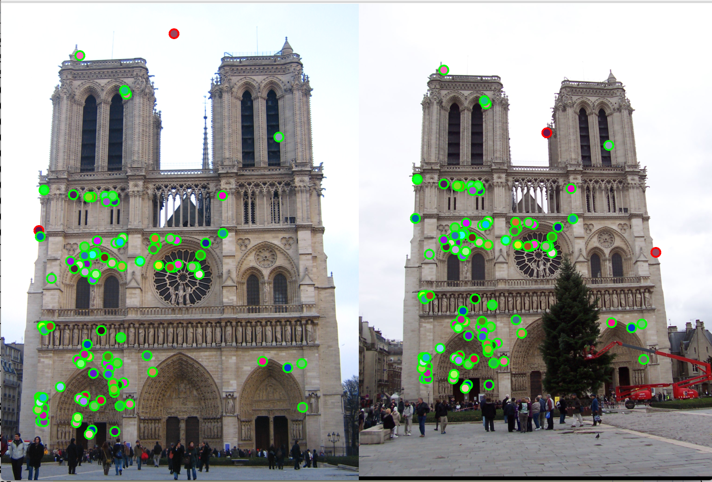
Figure 10(a): Interest points correct/incorrect. |
|
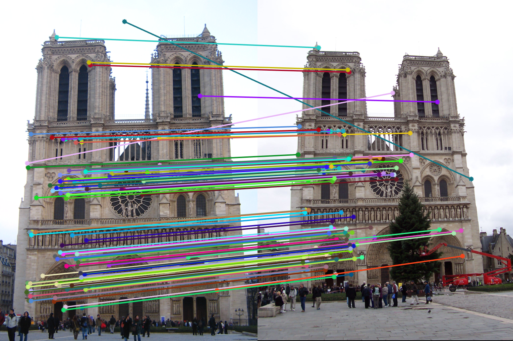
Figure 10(b): Matching interest points. |
2. Adaptive non-max suppression:
Gaussian filter sigma = 0.5
gaussian filter size = 3
alpha = 1.54e-3
Size of non-max suppression window = 3x3 pixels window
Resulting accuracy = 100% (for top 100 matches)
|
Figure 11(a): Interest points correct/incorrect. |
|
Figure 11(b): Matching interest points. |
3. Using keypoints from multiple scales:
Gaussian filter sigma = 0.5
gaussian filter size = 3
alpha = 1.54e-3
Size of non-max suppression window = 3x3 pixels window
Scales used: 1, 0.5, 0.25.
Resulting accuracy = 100% (for top 100 matches)
|
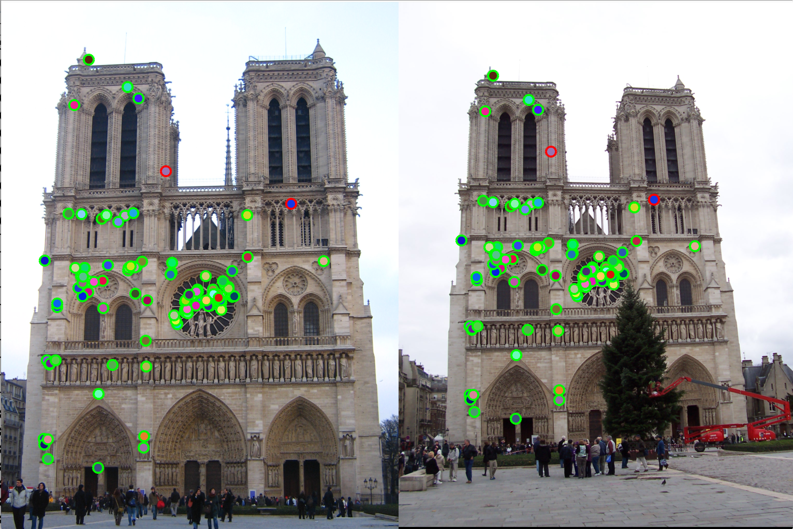
Figure 12(a): Interest points correct/incorrect. |
|
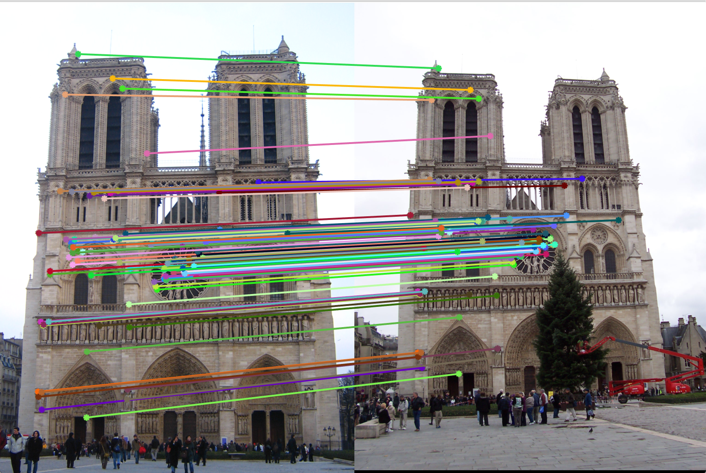
Figure 12(b): Matching interest points. |
4. Using knnsearch:
Gaussian filter sigma = 0.5
gaussian filter size = 3
Size of non-max suppression window = 3x3 pixels window
Resulting accuracy = 100% (for top 100 matches)
|
Figure 13(a): Interest points correct/incorrect. |
|
Figure 13(b): Matching interest points. |
Mount Rushmore
Using Harris corner detection, SIFT and exhaustive search:
Gaussian filter sigma = 0.5
gaussian filter size = 3
Size of non-max suppression window = 3x3 pixels window
Resulting accuracy = 99% (for top 100 matches)
|
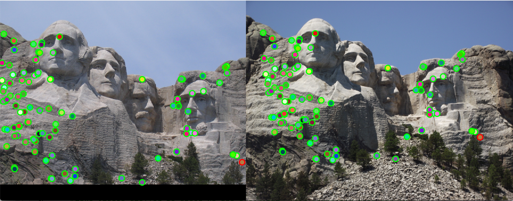
Figure 14(a): Interest points correct/incorrect. |
|
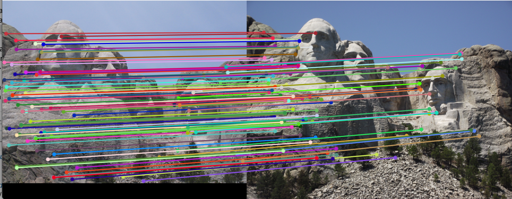
Figure 14(b): Matching interest points. |
Episcopal Gaudi
Using Harris corner detection, SIFT and exhaustive search:
Gaussian filter sigma = 0.5
gaussian filter size = 3
Size of non-max suppression window = 3x3 pixels window
Resulting accuracy = 5% (for top 100 matches)
|
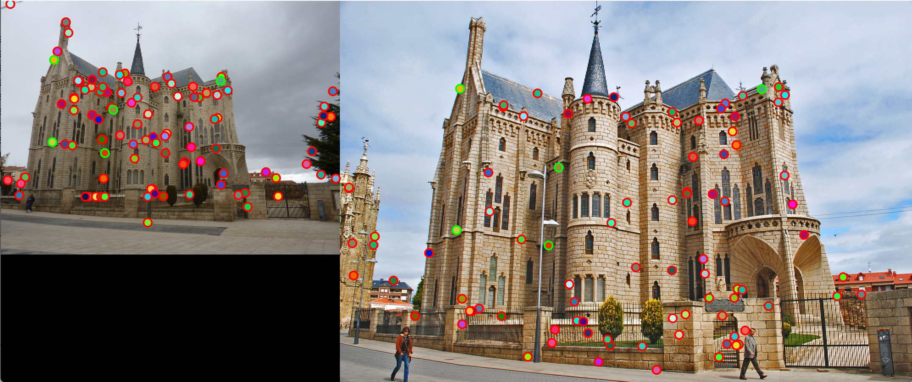
Figure 15(a): Interest points correct/incorrect. |
|
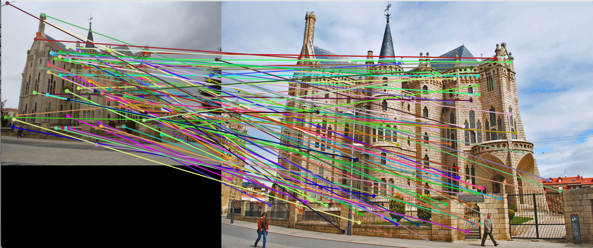
Figure 15(b): Matching interest points. |
Tuning of Parameters
In this assignment we have observed that free parameter tuning changes the result by a large extent.
1. Gaussian sigma: If this is too high, the image is blurred too much and hence the edges are not detected. Dut to this we get best result with a very low sigma if filter.
2. Non-max suppression pixel cluster size: here we have considered a 4x4 pixel cluster size. If higher, the interest points will further away from each other. This is good till a certain cluster size. beyond that, we may lose out on important interest points. Adaptive non-max suppression takes care of this by setting the cluster size such that it is lesser than the next closest interst point.
3. Threshold of get_interest_points: Higher the threshold, lower number of interest points will be detected. If we have low number of interest points, we may observe lower matches. For example, for a threshold 10x lesser than the currently tuned value, we observe a 12% drop in accuracy. Thus we must see a balance between threshold and non-max suppression radius.